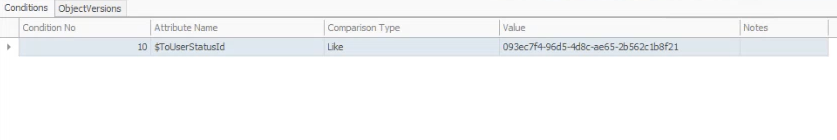

Manage the user status of a document
You can use system variables for business rules with the "STATECHANGED" and "STATECHANGING" events to trigger specific actions when changing the user status of a document.
- $FromUserStatusId - ties the rule to the initial user status, ensuring that actions are triggered based on the starting status of a document
- $ToUserStatusId - ties the rule to the target user status, allowing actions to be triggered when the document transitions to the specified status.
Set up a business rule
In this example, we will create a business rule for documents of type Offer.
In the end, we should trigger a warning message when changing an offer's document status.
Step-by-step example
If not present, create at least two user statuses for the FIRMPLANNED document state of the Offer document type.
Define a STATECHANGED event with a FIRMPLANNED parameter.
In the Conditions panel, select $ToUserStatusId from the Attribute name field.
Within the Value field, input the ID of the user status corresponding with the FIRMPLANNED state of the Offer document type.

Define a warning action with a formatted string parameter (e.g. "yes") and save the business rule.
Now, if you change the user status of an offer in Firm planned state to the one specified in the condition of the business rule, you will trigger a warning.